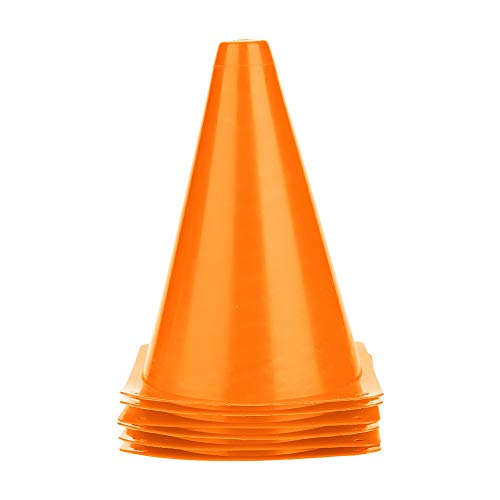
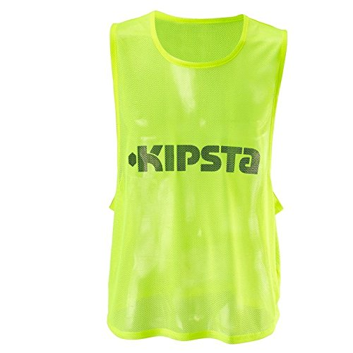
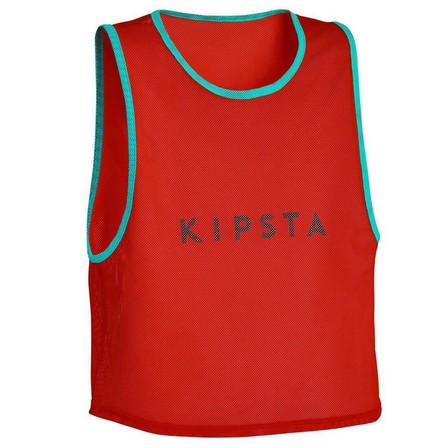
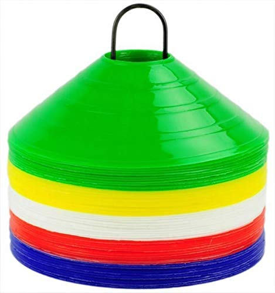

हमारे खिलाड़ी 🏅
अशोक
रमेश
सत्या
जीवन
हेमजी
राजू
रामनिवास
दिनेश
प्रकाश
अमर
नवीन

हेमा
प्रमोद
दीपक
मनीष
नरेंद्र
दिलीप
रवि
| क्रमांक | उपकरण | संख्या |
|---|---|---|
| 1 | ⚽ फुटबॉल | 5 |
| 2 | 🏐 वॉलीबॉल | 4 |
| 3 | 🥅 वॉलीबॉल नेट | 1 |
| 4 | कोन | 10 |
| 5 | 🎽 ब्लू बिब्स | 3 |
| 6 | 🦺 ऑरेंज बिब्स | 8 |
| 7 |  ग्रीन बिब्स | 5 |
| 8 |  लाल बिब्स | 1 |
| 9 | 🖍️ पम्प | 3 |
| 10 |  मार्कर कोन | 29 |
अशोक
रमेश
सत्या
जीवन
हेमजी
राजू
रामनिवास
दिनेश
प्रकाश
अमर
नवीन
हेमा
प्रमोद
दीपक
मनीष
नरेंद्र
दिलीप
रवि